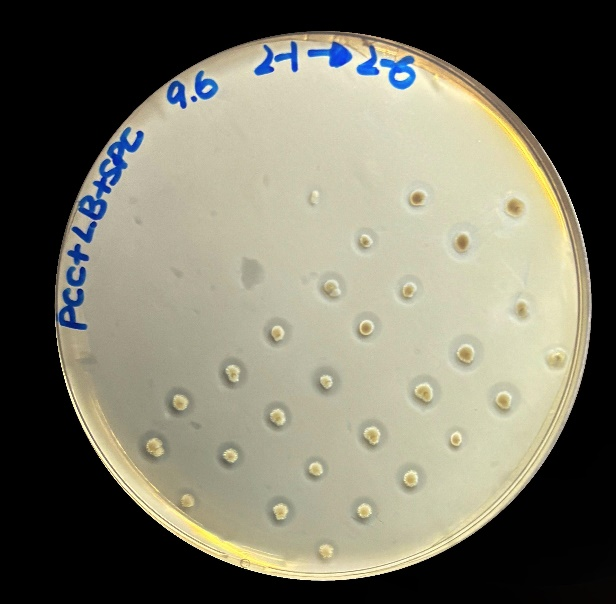
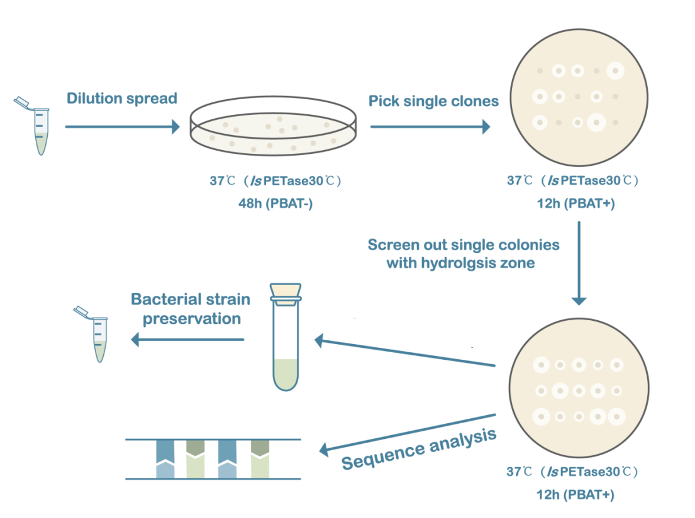
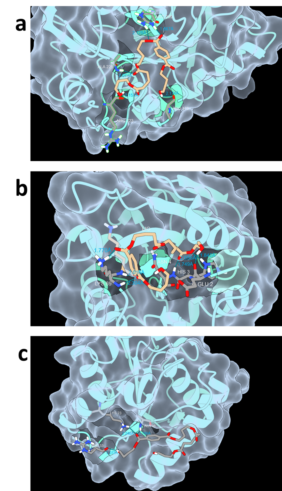
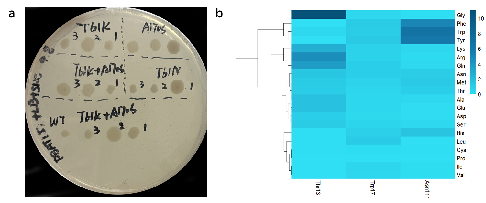
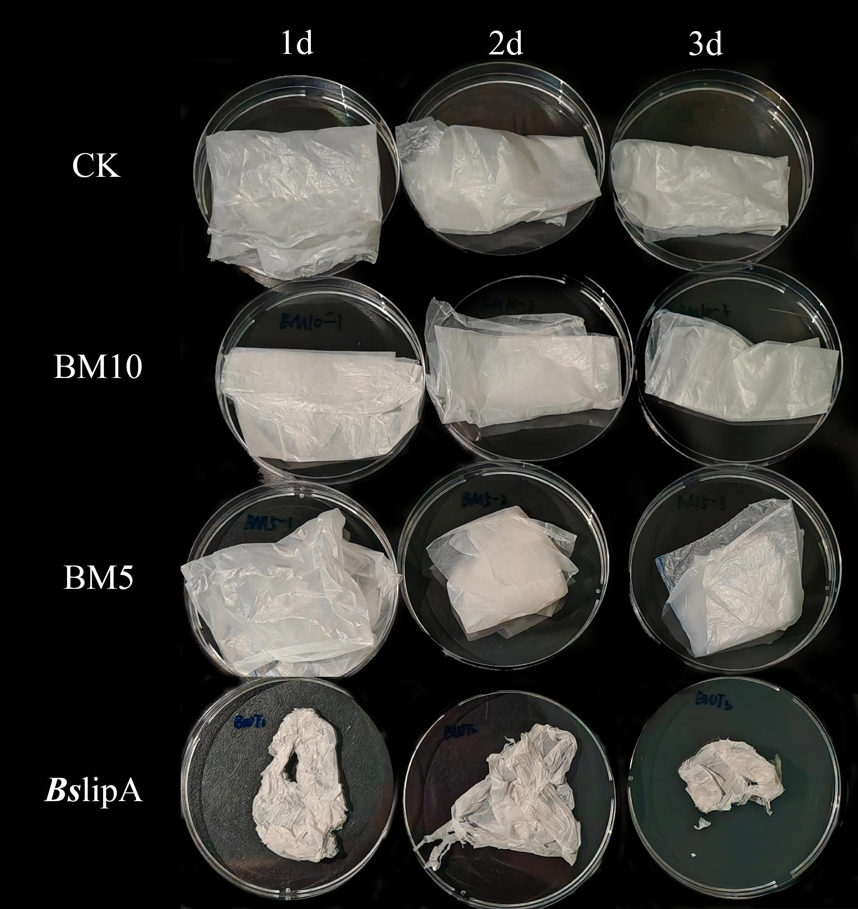
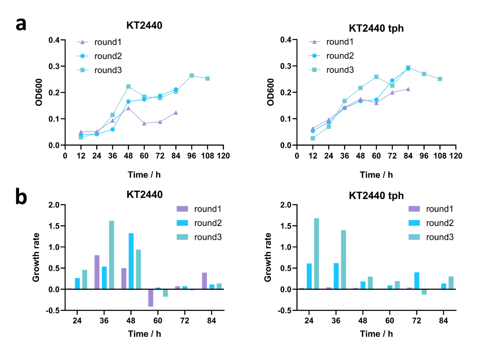

Validation of the secretion pathway in Bacillus subtilis
To verify whether the enzymes were secreted out of the cells, we cultivated the bacterium on the plates with polycaprolactone (PCL), which can be hydrolyzed by lipases, esterases, keratinases and so on, commonly serving as a model substrate for assessing the extracellular secretion of hydrolases[1]. After incubating at 30 ℃ for 24 hours, all colonies exhibited distinct hydrolysis zones (Figure 1), indicating that this pathway enables Bacillus subtilis a stable extracellular protein secretion capability. The successfully constructed protein exocytosis pathway allows for intuitive hydrolysis zones screening of the PBAT-degrading enzyme libraries.

Figure 1. PCL plates to verify the secretion ability of Bacillus subtilis. Bacillus subtilis with recombinant plasmids were cultured on LB agar medium supplemented with PCL within 12-24 hours[1].
Construction and screening mutation libraries separately of IsPETase, BsLipA and Lipase1028
Error-prone PCR (epPCR) and site-directed mutagenesis techniques were used to construct the mutation libraries of the 3 candidate genes, followed by a production of the variants in B. subtilis and screening variants by selection of phenotypes. The ratio of the diameter of the hydrolysis zone to the colony diameter can roughly reflect the ability of the variants to degrade PBAT. Firstly, the strains with successful transformants were sorted from the LB plate only with antibiotics. Then active colonies with larger hydrolysis zones were chosen from LB-agar plates supplemented 2% PBAT, followed with the next round screening to evaluate the stability and the diameter of potential colonies which were selected for further analysis (Figure 2).

Figure 2. Screening strategies for mutation libraries.
For IsPETase, following two rounds of error-prone PCR, 54 plates were screened to construct a mutation library containing approximately 1,260 variants. In preliminary experiments, we adjust the ion environment of the PCR system through gradient experiments. A number of strains capable of producing small hydrolysis zones were sorted, but they only possessed limited transformation efficiency, poor growth ability and almost no mutations. These may be attributed to adaptive laboratory evolution (ALE) of the strains during growth on PBAT-containing plates, rather than mutations (Figure 3a). Therefore, the error-prone PCR system was optimized by adjusting the concentrations of Mn²⁺ and Mg²⁺ to construct a new mutation library.
For the BsLipA enzyme, a mutation library comprising approximately 1,220 variants was constructed through a single round of error-prone PCR. Two mutants were isolated and designated BM5 and BM10. However, when culturing these mutants on LB agar medium supplemented with PBAT, the hydrolysis zones produced by BM5 and BM10 were smaller compared to the wild type (Figure 3b).
Recently, our laboratory identified a new lipase 1028, which exhibits strong degradation ability toward polyurethane (PU). Given that both PBAT and PU are polyester-based degradable materials, we hypothesized that 1028 had evolutionary potential[2]. To test this, a mutation library comprising over 6,000 variants was constructed across 40 plates through a single round of error-prone PCR, and successfully isolated six highly efficient mutants, designated 1028_M2 through 1028_M7 (Figure 3c). These mutants exhibited clear hydrolysis zones after just 4 hours of incubation at 37℃, significantly outperforming the wild-type enzyme in PBAT degradation.

Figure 3. (a) Hydrolysis zones of IsPETase mutants (D1-D14). Possibly due to the lower evolutionary starting point of IsPETase, the smaller hydrolysis zones and the generally lower degree of transparency. (b) Hydrolysis zones of BsLipA mutants. We screened two individuals that were better on PBAT LB plates based on the ratio of the hydrolysis zones to the diameter of the bacteriophage zones and named them BM5, BM10, respectively. (c) Hydrolysis zones of Lipase 1028 mutants. The size of the hydrolysis zones incubated at 37℃ for 4 h, 6 h, 8 h, 10 h, and 24 h, respectively, reflected the generally higher PBAT catabolic capacity of mutants of lipase 1028.
In addition to the error-prone PCR with random mutagenesis, we
performed targeted mutagenesis of three wild-type PBAT-degrading enzymes in parallel using 
computer simulation in order to
achieve better mutation effect.
Figure 4. (a) Molecular docking analysis of IsPETase. Hydrogen bond interactions between IsPETase and BABTaB. (b) Molecular docking analysis of BslipA. Hydrogen bond interactions between BslipA and BABTaB. (c) Molecular docking analysis of Lipase 1028. Hydrogen bond interactions between Lipase 1028 and BABTaB.
Using the web server of HotSpot Wizard 3, we scanned the highly variable residues in the catalytic pocket of IsPETase (Figure 4a), resulting in the mutations of T61N, T61K, and A170S (Table 1) [3]. Then we constructed five mutant groups: A170S, T61K, T61N, T61N+A170S, and T61K+A170S. These mutants were transformed into Bacillus subtilis SCK6 for subsequent hydrolysis zone screening and validation (Figure 5a). However, no mutants with significant hydrolysis zones were obtained.

Figure 5. (a) Growth of colonies with the Site-directed
mutation of IsPETase. No obvious hydrolysis zones were found. (b) The amino acid mutation heatmap of the
Lipase 1028.
Table 1. Main characteristics of IsPETase single mutation prediction
|
Index |
Mutation |
Mutation Energy (kcal/mol) |
Effect |
|
1 |
A: Thr61>Asn |
-0.6 |
STABILIZING |
|
2 |
A: Thr61>Lys |
-0.4 |
STABILIZING |
|
3 |
A: Ala170>Ser |
-0.4 |
STABILIZING |
Using the same methodology, predictions for the enzyme BsLipA (Figure 4b) yielded the mutation results Y125F, A75S, T101S, T101A, and A75G (Table 2). We created fifteen mutant groups: Y125F, A75S, T101S, T101A, A75G, Y125F+A75S, Y125F+T101S, Y125F+T101A, Y125F+A75G, A75S+T101S, A75S+T101A, T101S+A75G, T101A+A75G, Y125F+A75S+T101S, Y125F+A75S+T101A, Y125F+T101S+A75G, Y125F+T101A+A75G. After computer simulation of site-directed mutations, the resulting mutation effects were all neutral mutations, so no further experimental validation was carried out, which may have some relation to our inability to obtain favorable mutations during error-prone PCR.
Table 2. Main characteristics of BsLipA single mutation prediction
|
Index |
Mutation |
Mutation Energy (kcal/mol) |
Effect |
|
1 |
A: Tyr125>Phe |
0.8 |
NEUTRAL |
|
2 |
A: Ala75>Ser |
0.9 |
NEUTRAL |
|
3 |
A: Thr101>Ser |
1.2 |
NEUTRAL |
|
4 |
A: Thr101>Ala |
1.6 |
NEUTRAL |
|
5 |
A: Ala75>Gly |
2.8 |
NEUTRAL |
Using the same methodology, we conducted virtual screening of potential mutation residue sites of Lipase 1028 (Figure 4c) and determined the specific mutation direction based on the magnitude of changes in mutation energy (Figure 5b). We obtained the following five mutations: T13G, N111W, N111Y, N111F, and T13R (Table 3). Based on the five mutations, we created the following 15 mutation groups, T13G, N111W, N111Y, N111F, T13R, T13G+N111W, T13G+N111Y, T13G+N111F, N111W+T13R, N111Y+T13R and N111F+T13R. We have found the above favorable sites and designed primers, but due to the time limi, we have not yet performed experimental validation.
Table 3. Main characteristics of 1028 single mutation prediction
|
Index |
Mutation |
Mutation Energy (kcal/mol) |
Effect |
|
1 |
A: Thr13>Gly |
-2.4 |
STABILIZING |
|
2 |
A: Asn111>Trp |
-1.9 |
STABILIZING |
|
3 |
A: Asn111>Tyr |
-1.8 |
STABILIZING |
|
4 |
A: Asn111>Phe |
-1.6 |
STABILIZING |
|
5 |
A: Thr13>Arg |
-1.5 |
STABILIZING |
Morphological changes of PBAT films after degradation
To quantify the degradation ability of BsLipA variants BM5 and BM10, we conducted a PBAT film degradation experiment in LB. In the experiment, the PBAT film in the blank group, which was not inoculated with any strain, remained intact without significant changes after 3 days of incubation (Figure 6). However, the degradation rate of BsLipA film in CK gradually increased over time, exhibiting degradation characteristics such as color whitening and reduced ductility. It is worth noting that our variants BM5 and BM10 also did not demonstrate significant degradation ability on PBAT. Although they showed some degradation ability during plate screening, the treated films only had minor surface changes, and their overall morphology remained relatively stable without obvious degradation observed.

Figure 6. Morphological changes of PBAT films over different degradation periods. After incubating for 3 days in LB liquid medium without inoculated bacteria, the control group's PBAT remained intact, showing no significant changes. In the BsLipA group, PBAT films exhibited increasing degradation rates, turning whiter in color and decreasing in ductility when co-incubated with different strains. Films treated with BM5 and BM10 showed relatively minor changes, with a slight reduction in overall film area and a few holes appearing on the surface.
Isolation of KT2440-tph mutants capable of utilizing 1, 4-butanediol as a carbon source through adaptive laboratory evolution
Given the fact that P.putida KT2440 possesses the genetic inventory allowing growth on 1,4-butanediol as C-source [4], we speculated that ALE might select for 1,4-butanediol utilizing mutants. Therefore, we performed two independent ALE experiments, wild-type strain of P.putida KT2440 and KT2440-tph respectively, and different mineral salt medium (MSM) supplemented with 1,4-butanediol and TPA as sole carbon source: measure the optical density at 600 nm (OD600) every 12 hours, and re-inoculated the strains once they reached the stationary phase with a total of three rounds of subculturing (Figure 7). The results indicated that as the iterative cultivation progressed, the growth rate of both the wild-type KT2440 and KT2440-tph continuously increased, demonstrating a stronger capability to utilize BDO and TPA. We plan to continue ALE in subsequent experiments to enhance their ability of degrading BDO and TPA, aiming to achieve rapid clearance of PBAT degradation products.

Figure 7. Adaptive laboratory evolution (ALE) growth curves (a) and growth rate curves (b) of KT2440 and KT2440-tph. Three consecutive rounds of cultivation were conducted, with OD600 measured every 12 hours. In the minimal salt medium for KT2440, BDO was added as the sole carbon source; for KT2440-tph, the medium was supplemented with TPA as the sole carbon source. The results indicated that as the iterative cultivation progressed, the growth ability of KT2440 gradually increased, which was particularly evident during the first 48 hours. (1) In terms of the maximum OD600 values, the third round showed the highest value, with KT2440 and KT2440-tph separately achieving 113.96% and 101.44% of the values observed in the second round, and 187.52% and 138.12% of the values in the first round, respectively; (2) Regarding the maximum growth rates, the third round also demonstrated a significant advantage, with KT2440 and KT2440-tph separately exhibiting 1.22 times and 2.71 times the growth rates of the second round, and 2 times and 36.52 times the growth rates of the first round. These suggests that both KT2440 and KT2440-tph have increasingly strengthened their ability to utilize BDO or TPA as the carbon source with each round of iterative cultivation.
Reference
[1] S. M. Satti and A. A. Shah, Polyester-based biodegradable plastics: an approach towards sustainable development, Letters in Applied Microbiology, 70, 413-430, (2020).
DOI: https://doi.org/10.1111/lam.13287
[2] Z. Jiang, X. Chen, H. Xue, Z. Li, J. Lei, M. Yu, et al., Novel polyurethane-degrading cutinase BaCut1 from Blastobotrys sp. G-9 with potential role in plastic bio-recycling, Journal of Hazardous Materials, 472, (2024).
DOI: https://doi.org/10.1016/j.jhazmat.2024.134493
[3] L. Sumbalova, J. Stourac, T. Martinek, D. Bednar and J. Damborsky, HotSpot Wizard 3.0: web server for automated design of mutations and smart libraries based on sequence input information, Nucleic Acids Res, 46, W356-w362, (2018).
DOI: https://doi.org/10.1093/nar/gky417
[4] H. Hara, D. Eltis Lindsay, E. Davies Julian and W. Mohn William, Transcriptomic Analysis Reveals a Bifurcated Terephthalate Degradation Pathway in Rhodococcus sp. Strain RHA1, J Bacteriol, 189, 1641-1647, (2007).